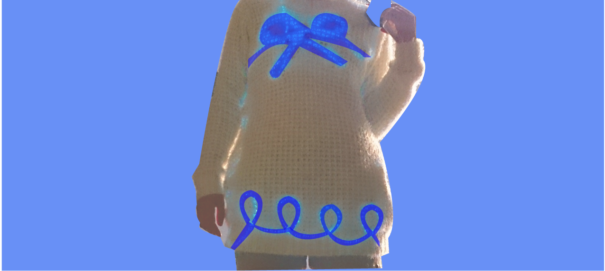

Web App2014Students Group at DevBootcampAmber is a rails/javascript app which allows users to choose food flavor profiles and makes solid beer pairing suggestions.
Web App2014PersonalOideyo lyrics collector is a rails app to remember the lyrics of the song "Oideyo" by andymori which broke up in 2014. Over 100 fans of andymori used this app and helped remembering the wonderful song.
Android App/ Rails server2014Univ of Tokyo female Hackathon groupFuki iin is an Android app designed for Univ of Tokyo female students to deal with stress they face. You can shoot a blogun and virtually attack your enemy by blowing into a microphone. Got an Amazon award.

Persona Hitoe
Android App/ Arduino/ Media Art2014Google Japan STEP intern groupPersona Hitoe is an Android app which can detect user's speech and light up the sweater differently based on it. This way we visualized how we choose different personas in different situations.